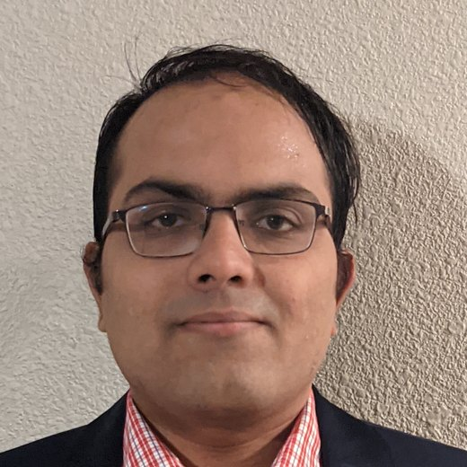

Hariharan Devarajan
Computer Scientist · Center for Applied Scientific Computing (CASC), Lawrence Livermore National Laboratory
Explainable I/O, data movement, and storage systems for scientific and AI workflows
I am a Computer Scientist at the Center for Applied Scientific Computing (CASC), Lawrence Livermore National Laboratory (LLNL). I work on data movement, storage systems, and performance analysis for large-scale scientific and AI workflows on supercomputers. My research makes I/O explainable: connecting low-level storage telemetry with workflow context, tracking the lineage of scientific data, and turning those insights into targeted optimizations. I lead the Moirai provenance project (LDRD, PI), co-lead DLDL (deep learning data loading), lead data management for the Heuretes strategic initiative, and created the DLIO Benchmark (part of MLPerf Storage) and DFTracer. I received my Ph.D. in Computer Science from Illinois Tech.
Research
Making data movement in HPC and AI workflows observable, explainable, and fast.
Explainable I/O
Explaining why I/O is slow by connecting storage telemetry with workflow context and the anatomy of the storage stack: DataCrumbs and ORION (ProTools'26), Metis (REX-IO'26), and XIO (SSDBM'25).
Performance Monitoring and Analysis
Scalable tracing and automated analysis of workflow data movement: DFTracer (SC'24), DFAnalyzer, WisIO (ICS'25), HORATIO (SSDBM'26), IOMax, Recorder, and SmartIO.
Provenance for Scientific Workflows
Moirai, an LDRD project I lead as PI, tracks the lineage and lifecycle of data across workflow tasks, software layers, and storage systems.
Deep Learning I/O
From monitoring to characterization to optimization of AI training pipelines: DLIO (CCGrid'21 Best Paper; MLPerf Storage), GLANCED-IO (HPDC'26), CoDL (REX-IO'26), Stimulus, and DYAD (SBAC-PAD'24).
Workload-aware Middleware
Hermes (HPDC'18), UnifyFS (IPDPS'26; R&D 100), DYAD, WADO (SSDBM'26), HCL, LABIOS (HPDC'19 Best Paper), and intent-driven I/O (Mimir, H5Intent, IFlux, iCR).
Projects
Current and recent projects and my role in each.
Moirai
Trusted data provenance for HPC workflows (LDRD Exploratory Research). Tracks the lineage and lifecycle of data across scientific workflows.
DLDL
Deep learning data loading: benchmarking, monitoring, and optimizing deep learning I/O pipelines on HPC systems with DLIO and DFTracer.
Heuretes
Cross-site data movement and scheduling under time constraints (LDRD Strategic Initiative).
XIO
I/O explainability and the anatomy of HPC storage stacks with DataCrumbs, ORION, and Metis.
GOTCHA
Mission-critical LLNL function-interposition library supporting tools across the DOE and NNSA ecosystem.
FRACTALE
Multi-cluster scheduling and data management; built IFlux and DataCrumbs.
Code
Publications
49 papers, newest first. Filter by type or search.
- DataCrumbs: Efficient Cross-Layer Data Capture for Explainable I/O Performance in HPC Storage StacksHariharan Devarajan, Sarah Neuwirth, Chen Wang, Ray A. O. Sinurat, Neeraj Rajesh, Jay Lofstead, Vanessa Sochat, Daniel Milroy, and Thomas ScoglandProceedings of the SC'26 Workshops of the International Conference for High Performance Computing, Networking, Storage and Analysis (SC Workshops'26): 8th Workshop on Programming and Performance Visualization Tools (ProTools'26), Chicago, IL, USA, IEEE, Nov. 2026
- ORION: Observability Framework for Hybrid Workflow-Centric I/O Monitoring in HPC SystemsHariharan Devarajan, Ray A. O. Sinurat, Izzet Yildirim, Olga Kogiou, Aniruddha Marathe, and Nikoli DrydenProceedings of the SC'26 Workshops of the International Conference for High Performance Computing, Networking, Storage and Analysis (SC Workshops'26): 8th Workshop on Programming and Performance Visualization Tools (ProTools'26), Chicago, IL, USA, IEEE, Nov. 2026
- iCR: Intent-Driven Adaptable Checkpoint/RestartOlga Kogiou, Hariharan Devarajan, Chen Wang, Weikuan Yu, and Kathryn Mohror2026 IEEE International Conference on Cluster Computing (CLUSTER'26), Alexandria, VA, USA, IEEE, Sep. 2026
- WADO: A Distributed WORM Storage Service for Asynchronous Data OperationsKarim Youssef, Hariharan Devarajan, Nikoli Dryden, and Roger PearceProceedings of the 38th International Conference on Scalable Scientific Data Management (SSDBM'26), ACM, Aug. 2026, pp. 1–12
- HORATIO: Bridging Management and Analysis of Traces at ScaleRay A. O. Sinurat, Hariharan Devarajan, Nikoli Dryden, Haryadi S. Gunawi, and William NixonProceedings of the 38th International Conference on Scalable Scientific Data Management (SSDBM'26), ACM, Aug. 2026, pp. 1–12
- GLANCED-IO: Taming I/O Optimization for Deep Learning at ScaleRay A. O. Sinurat, William Nixon, Philip Carns, Huihuo Zheng, Sandeep Madireddy, Sam Foreman, Troy Arcomano, Robert B. Ross, Haryadi S. Gunawi, and Hariharan DevarajanProceedings of the 35th International Symposium on High-Performance Parallel and Distributed Computing (HPDC'26), ACM, Jul. 2026, pp. 305–318
- Metis: Agentic Knowledge Synthesis for Explainable I/O Performance in HPC SystemsKarim Youssef, Sarah Neuwirth, Neeraj Rajesh, and Hariharan Devarajan6th Workshop on Re-envisioning Extreme-Scale I/O for Emerging Hybrid HPC Workloads (REX-IO'26), ACM, Jul. 2026
- CoDL: A Framework for Studying Cross-Component Interference in Deep Learning Training PipelinesDruva Dhakshinamoorthy, Ray A. O. Sinurat, Nikoli Dryden, Arnab K. Paul, and Hariharan Devarajan6th Workshop on Re-envisioning Extreme-Scale I/O for Emerging Hybrid HPC Workloads (REX-IO'26), ACM, Jul. 2026
- Chasing the Rabbit: A Systematic Exploration of Software-Defined HPC StorageHariharan Devarajan, Brian Behlendorf, Blake Devcich, Dean Roehrich, Matt Richerson, Tony Floeder, Brent Petit, Don Boyd, Trace Hamada, Tim McCree, Gian-Carlo Defazio, James Corbett, Elsa Gonsiorowski, Cameron Stanavige, Nikoli Dryden, Roger Pearce, Kathryn Mohror, and Bronis R. de SupinskiProceedings of the 7th Workshop on Extreme-Scale Storage and Analysis (ESSA'26), held in conjunction with the 40th IEEE International Parallel and Distributed Processing Symposium (IPDPS'26), IEEE, May 2026
- IFlux: Intent-Aware Storage Tiers & Software Scheduling for HPC SystemsHariharan Devarajan, Vanessa Sochat, Daniel J. Milroy, and Tom ScoglandIEEE Transactions on Parallel and Distributed Systems, 2026, pp. 2236–2251
- SmartIO: A Lightweight End-to-End Workflow for Runtime I/O Optimization of HPC SystemsHammad Bin Ather, Chen Wang, Hariharan Devarajan, Hank Childs, and Kathryn MohrorProceedings of the Parallel Data Storage Workshop (PDSW'25), held in conjunction with SC25: The International Conference for High Performance Computing, Networking, Storage and Analysis, ACM, Nov. 2025, pp. 1396–1405
- Optimizing I/O for an Exascale Implicit Kinetic Plasma Simulation using the Rabbit Storage SystemIan Lumsden, Hariharan Devarajan, Izzet Yildirim, Stefano Markidis, Andong Hu, Ivy Bo Peng, Luca Pennati, Dewi Yokelson, Stephanie Brink, Olga Pearce, Tom Scogland, Bronis R. de Supinski, Gian Luca Delzanno, Anthony Kougkas, Xian-He Sun, and Michela Taufer5th Workshop on Re-envisioning Extreme-Scale I/O for Emerging Hybrid HPC Workloads (REX-IO'25), 2025 IEEE International Conference on Cluster Computing Workshops (CLUSTER Workshops), IEEE, Sep. 2025, pp. 1–6
- Performance Optimization of an Exascale Implicit Kinetic Plasma Simulation on El CapitanIan Lumsden, Stefano Markidis, Andong Hu, Ivy Bo Peng, Luca Pennati, Dewi Yokelson, Stephanie Brink, Olga Pearce, Tom Scogland, Hariharan Devarajan, Bronis R. de Supinski, Gian Luca Delzanno, and Michela Taufer2025 IEEE International Conference on eScience (eScience), IEEE, Sep. 2025, pp. 319–320
- WisIO: Automated I/O Bottleneck Detection with Multi-Perspective Views for HPC WorkflowsIzzet Yildirim, Hariharan Devarajan, Anthony Kougkas, Xian-He Sun, and Kathryn MohrorProceedings of the 39th ACM International Conference on Supercomputing (ICS'25), ACM, Jun. 2025, pp. 749–763
- XIO: Toward eXplainable I/O for HPC SystemsSarah Neuwirth, Hariharan Devarajan, Chen Wang, and Jay LofsteadProceedings of the 37th International Conference on Scalable Scientific Data Management (SSDBM'25), ACM, Jun. 2025, pp. 1–6
- Recorder: Comprehensive Parallel I/O Tracing and AnalysisChen Wang, Izzet Yildirim, Hariharan Devarajan, Kathryn Mohror, and Marc SnirarXiv:2501.04654, Jan. 2025
- ML-based Modeling to Predict I/O Performance on Different Storage Sub-systemsYiheng Xu, Pranav Sivaraman, Hariharan Devarajan, Kathryn Mohror, and Abhinav Bhatele31st IEEE International Conference on High Performance Computing, Data, and Analytics (HiPC), IEEE, Dec. 2024
- DFTracer: An Analysis-Friendly Data Flow Tracer for AI-Driven WorkflowsHariharan Devarajan, Loic Pottier, Kaushik Velusamy, Huihuo Zheng, Izzet Yildirim, Olga Kogiou, Weikuan Yu, Anthony Kougkas, Xian-He Sun, Jae Seung Yeom, and Kathryn MohrorSC24: International Conference for High Performance Computing, Networking, Storage and Analysis, Atlanta, GA, IEEE, Nov. 2024
- TailorFS: An Adaptive file system to support dynamic I/O requirements of HPC workloadsHariharan Devarajan and Kathryn Mohror2024 IEEE 36th International Symposium on Computer Architecture and High Performance Computing (SBAC-PAD), IEEE, Nov. 2024, pp. 81–92
- DYAD: Locality-aware Data Management for accelerating Deep Learning TrainingHariharan Devarajan, Ian Lumsden, Chen Wang, Konstantia Georgouli, Tom Scogland, Jae-Seung Yeom, and Michela Taufer2024 IEEE 36th International Symposium on Computer Architecture and High Performance Computing (SBAC-PAD), IEEE, Nov. 2024, pp. 13–24
- Understanding Highly Configurable Storage for Diverse WorkloadsOlga Kogiou, Hariharan Devarajan, Chen Wang, Weikuan Yu, and Kathryn Mohror4th Workshop on Re-envisioning Extreme-Scale I/O for Emerging Hybrid HPC Workloads (REX-IO), IEEE, Sep. 2024
- The impact of asynchronous I/O in checkpoint-restart workloadsHariharan Devarajan, Adam Moody, Donglai Dai, Cameron Stanavige, Elsa Gonsiorowski, Marty McFadden, Olaf Faaland, Greg Kosinovsky, and Kathryn Mohror5th Workshop on Extreme-Scale Storage and Analysis (ESSA), IEEE, May 2024
- Empirical Study of Molecular Dynamics Workflow Data Movement: DYAD vs. Traditional I/O SystemsIan Lumsden, Hariharan Devarajan, Jack Marquez, Stephanie Brink, David Boehme, Olga Pearce, Jae-Seung Yeom, and Michela Taufer23rd IEEE International Workshop on High Performance Computational Biology (HICOMB), IEEE, May 2024
- H5Intent: Autotuning HDF5 with User IntentHariharan Devarajan, Gerd Heber, and Kathryn MohrorIEEE Transactions on Parallel and Distributed Systems, 2024
- IOMax: Maximizing Out-of-Core I/O Analysis Performance on HPC SystemsIzzet Yildirim, Hariharan Devarajan, Anthony Kougkas, Xian-He Sun, and Kathryn MohrorWorkshops of the International Conference on High Performance Computing, Network, Storage, and Analysis (SC-W 2023), Denver, CO, USA, ACM, Nov. 2023, pp. 1209–1215
- I/O characterization and performance evaluation of large-scale storage architectures for heterogeneous workloadsOlga Kogiou, Hariharan Devarajan, Chen Wang, Weikuan Yu, and Kathryn Mohror2023 IEEE International Conference on Cluster Computing Workshops (CLUSTER Workshops), IEEE, Oct. 2023, pp. 44–45
- Mimir: Extending I/O Interfaces to Express User Intent for Complex Workloads in HPCHariharan Devarajan and Kathryn Mohror2023 IEEE International Parallel and Distributed Processing Symposium (IPDPS), St. Petersburg, Florida, IEEE, May 2023
- Extracting and characterizing I/O behavior of HPC workloadsHariharan Devarajan and Kathryn Mohror2022 IEEE International Conference on Cluster Computing (CLUSTER'22), Heidelberg, Germany, Sep. 2022
- Stimulus: Accelerate Data Management for Scientific AI applications in HPCHariharan Devarajan, Anthony Kougkas, Huihuo Zheng, Venkatram Vishwanath, and Xian-He Sun2022 IEEE/ACM International Symposium in Cluster, Cloud, and Internet Computing (CCGrid'22), Taormina, Italy, May 2022
- HFlow: A Dynamic and Elastic Multi-Layered Data ForwarderJaime Cernuda Garcia, Hariharan Devarajan, Luke Logan, Keith Bateman, Neeraj Rajesh, Jie Ye, Anthony Kougkas, and Xian-He Sun2021 IEEE International Conference on Cluster Computing (CLUSTER'21), Portland, OR, IEEE, Sep. 2021
- Apollo: An ML-assisted Real-Time Storage Resource ObserverNeeraj Rajesh, Hariharan Devarajan, Jaime Cernuda Garcia, Keith Bateman, Luke Logan, Jie Ye, Anthony Kougkas, and Xian-He SunProceedings of the 30th International Symposium on High-Performance Parallel and Distributed Computing (HPDC'21), New York, NY, USA, Association for Computing Machinery, Jun. 2021, pp. 147–159
- DLIO: A Data-Centric Benchmark for Scientific Deep Learning ApplicationsHariharan Devarajan, Huihuo Zheng, Anthony Kougkas, Xian-He Sun, and Venkatram Vishwanath2021 21st IEEE/ACM International Symposium on Cluster, Cloud and Internet Computing (CCGRID), IEEE, May 2021
- HReplica: A Dynamic Data Replication Engine with Adaptive Compression for Multi-Tiered StorageHariharan Devarajan, Anthony Kougkas, and Xian-He Sun2020 IEEE International Conference on Big Data (Big Data), Atlanta, Georgia, USA, Dec. 2020
- HCL: Distributing Parallel Data Structures in Extreme ScalesHariharan Devarajan, Anthony Kougkas, Keith Bateman, and Xian-He Sun2020 IEEE International Conference on Cluster Computing (CLUSTER), IEEE, Sep. 2020
- HCompress: Hierarchical Data Compression for Multi-Tiered Storage EnvironmentsHariharan Devarajan, Anthony Kougkas, Luke Logan, and Xian-He Sun2020 IEEE International Parallel and Distributed Processing Symposium (IPDPS), New Orleans, Louisiana, USA, May 2020
- HFetch: Hierarchical Data Prefetching for Scientific Workflows in Multi-Tiered Storage EnvironmentsHariharan Devarajan, Anthony Kougkas, and Xian-He Sun2020 IEEE International Parallel and Distributed Processing Symposium (IPDPS), New Orleans, Louisiana, USA, May 2020
- Bridging Storage Semantics using Data Labels and Asynchronous I/OAnthony Kougkas, Hariharan Devarajan, and Xian-He SunACM Transactions on Storage (TOS), 2020
- ChronoLog: A Distributed Shared Tiered Log Store with Time-based Data OrderingAnthony Kougkas, Hariharan Devarajan, Keith Bateman, Jaime Cernuda, Neeraj Rajesh, and Xian-He SunProceedings of the 36th International Conference on Massive Storage Systems and Technology (MSST 2020), 2020
- NIOBE: An Intelligent I/O Bridging Engine for Complex and Distributed WorkflowsK. Feng, H. Devarajan, A. Kougkas, and X.-H. SunIEEE International Conference on Big Data, Dec. 2019
- LABIOS: A Distributed Label-Based I/O SystemAnthony Kougkas, Hariharan Devarajan, Jay Lofstead, and Xian-He SunProceedings of the ACM 28th International Symposium on High-Performance Parallel and Distributed Computing (HPDC'19), Jun. 2019
- An Intelligent, Adaptive, and Flexible Data Compression FrameworkHariharan Devarajan, Anthony Kougkas, and Xian-He SunProceedings of the IEEE/ACM International Symposium in Cluster, Cloud, and Grid Computing (CCGrid'19), May 2019
- I/O Acceleration via Multi-Tiered Data Buffering and PrefetchingAnthony Kougkas, Hariharan Devarajan, and Xian-He SunJournal of Computer Science and Technology, 2019
- Vidya: Performing Code-Block I/O Characterization for Data Access OptimizationHariharan Devarajan, Anthony Kougkas, Prajwal Challa, and Xian-He SunProceedings of the IEEE International Conference on High Performance Computing, Data, and Analytics (HiPC), Dec. 2018
- Harmonia: An Interference-Aware Dynamic I/O Scheduler for Shared Non-Volatile Burst BuffersAnthony Kougkas, Hariharan Devarajan, Xian-He Sun, and Jay LofsteadProceedings of the IEEE International Conference on Cluster Computing (Cluster'18), Sep. 2018
- Hermes: A Heterogeneous-Aware Multi-Tiered Distributed I/O Buffering SystemAnthony Kougkas, Hariharan Devarajan, and Xian-He SunProceedings of the ACM 27th International Symposium on High-Performance Parallel and Distributed Computing (HPDC'18), Jun. 2018
- IRIS: I/O Redirection via Integrated StorageAnthony Kougkas, Hariharan Devarajan, and Xian-He SunProceedings of the 32nd ACM International Conference on Supercomputing (ICS'18), Jun. 2018
- Enosis: Bridging the Semantic Gap between File-based and Object-based Data ModelsAnthony Kougkas, Hariharan Devarajan, and Xian-He SunProceedings of the ACM SIGHPC Datacloud'17, 8th International Workshop on Data-Intensive Computing in the Clouds, Nov. 2017
- Syndesis: Mapping Objects to Files for a Unified Data Access SystemAnthony Kougkas, Hariharan Devarajan, and Xian-He SunProceedings of the ACM SIGHPC MTAGS'17, 10th International Workshop on Many-Task Computing on Clouds, Grids, and Supercomputers, in conjunction with SC'17, Nov. 2017
- Open Ethernet Drive: Evolution of Energy-Efficient Storage TechnologyHariharan Devarajan, Anthony Kougkas, Hsing-Bung Chen, and Xian-He SunProceedings of the ACM SIGHPC Datacloud'17, 8th International Workshop on Data-Intensive Computing in the Clouds, in conjunction with SC'17, Nov. 2017
No publications match.
Highlights
Awards, service, and recent talks.
Awards
- Proposal award: "DLDL: Deep Learning Data Loading" (Co-Principal Investigator), 2025
- LDRD Exploratory Research award: "Trusted Data Provenance for HPC Workflows (Moirai)" (Principal Investigator, 27-ERD-025), 2026
- LDRD Strategic Initiative award: "FRACTALE: multi-cluster scheduling and data management" (Thrust Lead for Data Management), 2023
- LDRD Strategic Initiative award: "Heuretes: cross-site data movement under time constraints" (Thrust Lead for Data Management), 2026
- LLNL Director's Institutional Award for optimizing iPIC3D I/O on El Capitan with the Rabbit storage system (REX-IO'25)
- R&D 100 Award for UnifyFS (2024)
- Best Paper Award, IEEE/ACM CCGrid 2021 (DLIO)
- Karsten Schwan Best Paper Award, ACM HPDC 2019 (LABIOS)
- Outstanding Service Award, IEEE Cluster 2021
Service
- Program Co-Chair, SSDBM 2026
- Posters Co-Chair, HPDC 2026 and IEEE Cluster 2026
- Program Committee: IPDPS, HPDC, Cluster, CCGrid, ICS, ICPP, ESSA, and REX-IO 2026
- Review Board Member, IEEE Transactions on Parallel and Distributed Systems
- Judge, IPDPS 2026 PhD Forum and PACT ACM Student Research Competition
Talks and Panels
- Demo, "Chasing the Rabbit: Software-Defined Storage in Action," DOE booth at SC26
- Talk, "Explaining HDF5 Performance through the I/O Stack," HDF5 BoF at SC26
- Panelist, "Who Gets to Do Computing Research in 2036?" PACT 2026
- Talk, "Skills Before Smarts: Harness Engineering for Robust Software-Development Agents," MLAC at PACT 2026 Slides
- Keynote, "Why is my I/O Slow? Rethinking Storage Systems for Explainability," REX-IO'26 at HPDC 2026 Slides
- Panelist, "Data Centers: Information, Misinformation, and the Future of Large-Scale Computing," HPDC 2026
Contact
Office
Lawrence Livermore National Laboratory, 7000 East Ave, Livermore, CA 94550